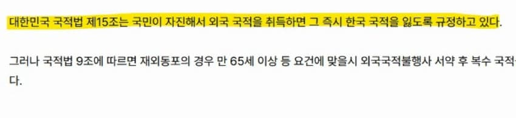
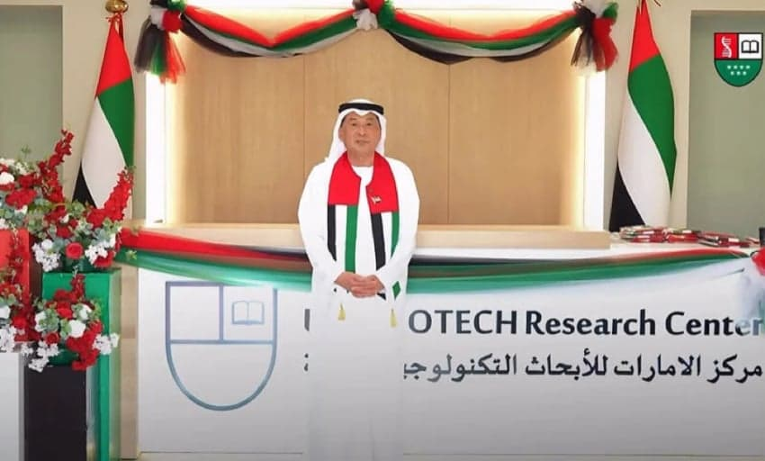
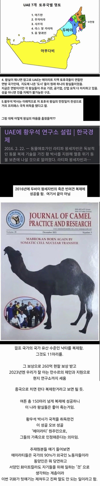
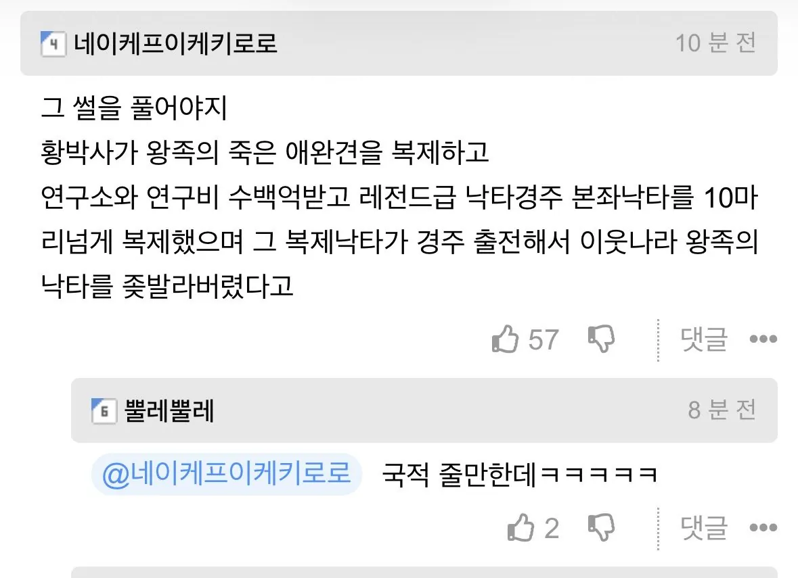
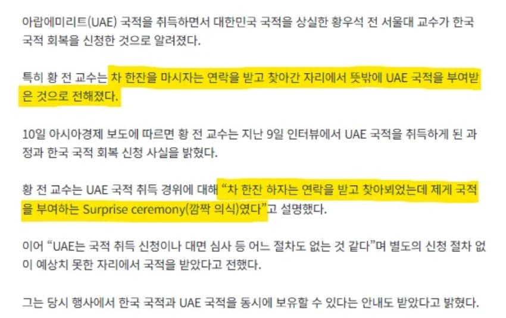
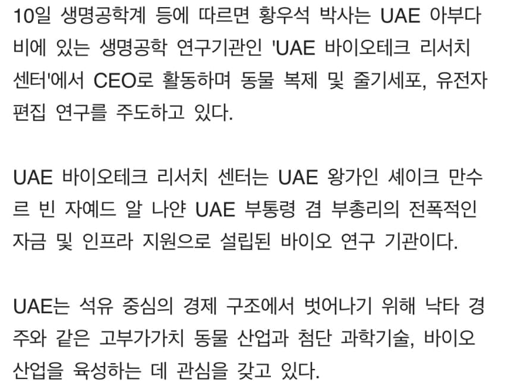
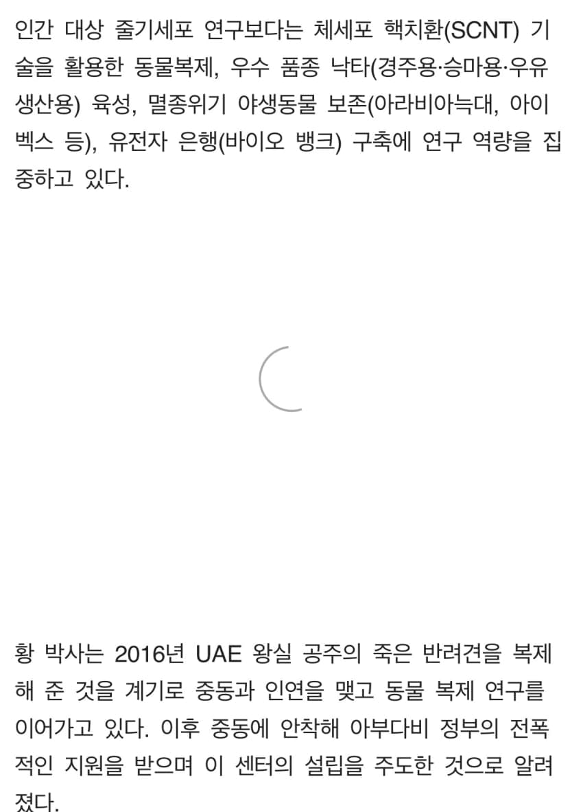

외국 국적 얻으면 즉시 한국 국적 소멸

그래서
uae 국적 받고 한국 국적 회복 신청함



그리고
복제 낙타 개체수 500마리 넘음

바이오테크 리서치센터에서 유전자 연구하는 중

인간 연구 대신에 동물 복제만 한다고







댓글
수집 당시 댓글 316개
ㅇㅇ · 11.12 23:08:43
o o · 11.12 23:21:35
ㅇㅇ · 11.12 23:25:02
· ㅇㅇ · 11.12 23:36:59
· ㅇㅇ · 11.13 00:31:39
· ㅇㅇ · 11.13 02:06:39
· ㅇㅇ · 11.13 04:32:49
ㅇㅇ · 11.12 23:42:50
ㅇㅇ · 11.12 23:43:23
· ㅇㅇ · 11.13 00:23:52
· ㅇㅇ · 11.13 03:18:12
· piyo · 11.13 06:23:08
· oo · 11.13 09:21:05
· ㅇㅇ · 11.13 12:02:06
지구감옥 · 11.12 23:43:59
ㅇㅇ · 11.12 23:53:44
ㅇㅇ · 11.12 23:54:23
ㅇㅇ · 11.12 23:56:00
ㅇㅇ · 11.12 23:56:40
ㅇㅇ · 11.12 23:56:50
채피 · 11.12 23:59:18
ansav454 · 11.13 00:12:21
ㅇㅇ · 11.13 00:13:18
ㅇㅇ · 11.13 00:17:36
환란 전 교회 휴거 · 11.13 00:31:29
ㅇㅇ · 11.13 00:34:25
· ㅇㅇ · 11.13 01:19:54
· ㅇㅇ · 11.13 01:20:22
· 레미엘은예외임 · 11.13 02:18:22
ㅇㅇ · 11.13 00:35:43
ㅇㅇ · 11.13 00:54:55
ㅇㅇ · 11.13 00:59:09
이어포스터 · 11.13 01:14:38
ㅇㅇ · 11.13 01:19:33
ㅇㅇ · 11.13 01:31:28
· ㅇㅇ · 11.13 01:33:05
· 무삭제요리 · 11.13 01:42:26
· ㅇㅇ · 11.13 04:45:19
· ㅇㅇ · 11.13 08:59:36
· ㅇㅇ · 11.13 09:17:53
ㅇㅇ · 11.13 01:45:26
ㅇㅇ · 11.13 01:45:28
ㅇㅇ · 11.13 01:50:25
ㄹㄹㄹㄹ · 11.13 01:51:03
ㅇㅇ · 11.13 02:01:01
ㅇㅇ · 11.13 02:08:13
· ㅇㅇ · 11.13 02:08:39
ㅇㅇ · 11.13 02:30:05
ㅇㅇ · 11.13 02:41:23
냠븜 · 11.13 03:39:21
ㅇㅇ · 11.13 04:18:44
ㅇㅇ · 11.13 04:43:32
오줌기타 · 11.13 04:58:22
ㅇㅇ · 11.13 05:00:12
ㅇㅇ · 11.13 05:03:29
ㅇㅇ · 11.13 05:03:34
웰빙킴 · 11.13 05:36:02
ㅇㅇ · 11.13 05:40:14
ㅇㅇ · 11.13 05:46:20
· ㅇㅇ · 11.13 09:01:36
· ㅇㅇ · 11.13 09:13:53
· ㅇㅇ · 11.13 09:18:45
· ㅇㅇ · 11.13 16:35:58
ㅇㅇ · 11.13 05:51:52
ㅇㅇ · 11.13 05:57:28
· ㅇㅇ · 11.13 09:49:50
ㅇㅇ · 11.13 06:51:47
ㅇㅇ · 11.13 06:57:52
ㅇㅇ · 11.13 06:58:43
ㅇㅇ · 11.13 07:06:21
ㅇㅇ · 11.13 07:18:16
· ㅇㅇ · 11.13 09:01:03
· ㅇㅇ · 11.13 09:15:34
· ㅇㅇ · 11.13 09:16:26
· ㅇㅇ · 11.13 09:16:51
· ㅇㅇ · 11.13 09:20:03
ㅇㅇ · 11.13 07:18:43
ㅇㅇ · 11.13 08:08:45
ㅇㅇ · 11.13 08:57:29
에오엠 · 11.13 09:18:12
ㅇㅇ · 11.13 09:46:16
ㅇㅇ · 11.13 09:56:49
· ㅇㅇ · 11.13 13:07:14
ㅇㅇ · 11.13 09:57:41
ㅇㅇ · 11.13 09:57:56
· ㅇㅇ · 11.13 10:21:12
룬 · 11.13 10:10:28
ㅇㅇ · 11.13 10:16:41
타이밍뒷통수한방 · 11.13 10:26:05
ㅇㅇ · 11.13 10:39:43
ㅇㅇ · 11.13 11:02:52
엔추파도스1 · 11.13 11:19:05
ㅇㅇ · 11.13 11:30:43
ㅇㅇ · 11.13 12:23:42
ㅇㅇ · 11.13 12:34:21
ㅇㅇ · 11.13 12:43:12
ㅇㅇ · 11.13 13:06:33
ㅇㅇ · 11.13 18:17:49
Gloved 1 · 11.13 18:56:13
· Gloved 1 · 11.13 18:58:08
· ㅇㅇ · 11.13 00:23:11
ㅇㅇ · 11.12 22:11:44
ㅇㅇ · 11.12 22:12:06
· ㅇㅇ · 11.12 23:17:23
· ㅇㅇ · 11.13 00:56:45
ㅇㅇ · 11.12 22:12:40
· ㅇㅇ · 11.12 22:15:10
ㅇㅇ · 11.12 22:12:57
· ㅇㅇ · 11.13 00:24:29
· ㅇㅇ · 11.13 00:28:02
ㅇㅇ · 11.12 22:13:52
ㅇㅇ · 11.12 22:14:14
ㅇㅇ · 11.12 22:14:53
ㅇㅇ · 11.12 22:14:54
ㅇㅇ · 11.12 22:15:25
ㅇㅇ · 11.12 22:15:38
ㅇㅇ · 11.12 22:15:59
· ㅇㅇ · 11.12 22:16:48
· ㅇㅇ · 11.12 22:19:13
· ㅇㅇ · 11.12 22:19:13
· ㅇㅇ · 11.12 22:19:46
· ㅇㅇ · 11.12 22:20:32
· ㅇㅇ · 11.12 22:22:17
· ㅇㅇ · 11.12 22:24:31
· ㅇㅇ · 11.12 22:26:19
· ㅇㅇ · 11.12 22:26:52
· ㅇㅇ · 11.12 22:28:02
· ㅇㅇ · 11.12 22:30:37
· ㅇㅇ · 11.12 22:31:43
· ㅇㅇ · 11.12 22:32:31
· ㅇㅇ · 11.12 22:34:01
· ㅇㅇ · 11.12 23:00:39
· ㅇㅇ · 11.13 00:33:27
ㅇㅇ · 11.12 22:16:16
· ㅇㅇ · 11.12 22:28:25
· ㅇㅇ · 11.12 22:31:06
· ㅇㅇ · 11.13 04:15:58
ㅇㅇ · 11.12 22:16:56
죽었던
적토마를
돌려준다고???
ㅇㅇ · 11.12 22:18:28
· ㅇㅇ · 11.12 22:21:41
· ㅇㅇ · 11.12 22:24:11
· ㅇㅇ · 11.12 22:25:19
· ㅇㅇ · 11.12 22:27:46
· ㅇㅇ · 11.12 22:28:02
· ㅇㅇ · 11.12 22:29:03
· ㅇㅇ · 11.12 22:31:51
· 사랑돌이 · 11.12 23:10:32
· ㅇㅇ · 11.12 23:35:22
· ㅇㅇ · 11.13 00:05:19
· ㅇㅇ · 11.13 00:13:08
· ㅇㅇ · 11.13 00:47:58
· ㅇㅇ · 11.13 00:49:01
· ㅇㅇ · 11.13 00:50:51
· ㅇㅇ · 11.13 01:18:19
· glow · 11.13 01:50:41
ㅇㅇ · 11.12 22:21:36
ㅇㅇ · 11.12 22:23:20
ㅇㅇ · 11.12 22:24:24
ㅇㅇ · 11.12 22:24:35
ㅇㅇ · 11.12 22:27:55
흑갸루에게능멸당하며밟히는아저씨 · 11.12 22:28:14
· ㅇㅇ · 11.13 08:06:49
ㅇㅇ · 11.12 22:28:16
ㅇㅇ · 11.12 22:29:02
ㅇㅇ · 11.12 22:32:10
· ㅇㅇ · 11.12 22:38:17
· ㅇㅇ · 11.12 23:23:17
· ㅇㅇ · 11.13 00:28:18
· ㅇㅇ · 11.13 00:35:53
ㅇㅇ · 11.12 22:33:00
ㅇㅇ · 11.12 22:39:02
S＆P500 · 11.12 22:40:02
· ㅇㅇ · 11.13 08:57:41
ㅇㅇ · 11.12 22:41:13
· ㅇㅇ · 11.13 01:38:41
ㅇㅇ · 11.12 22:41:19
· かなたん · 11.12 22:44:42
· ㅋㅋ · 11.12 23:19:48
ㅇㅇ · 11.12 22:43:27
· ㅇㅇ · 11.12 22:47:06
· ㅇㅇ · 11.12 22:49:17
· ㅇㅇ · 11.12 22:49:53
· ㅇㅇ · 11.12 22:50:32
· ㅇㅇ · 11.12 23:04:42
· ㅇㅇ · 11.12 23:54:41
· ㅇㅇ · 11.13 06:18:11
· oo · 11.13 09:20:16
· ㅇㅇ · 11.13 17:05:41
ㅇㅇ · 11.12 22:49:17
페브릭 · 11.12 22:50:42
· ㅇㅇ · 11.12 23:06:28
ㅇㅇ · 11.12 23:01:03
ㅇㅇ · 11.12 23:01:16
ㅇㅇ · 11.12 23:02:53
ㅇㅇ · 11.12 23:03:12
ㅇㅇ · 11.12 23:03:15
고양이수염뽑기 · 11.12 23:03:45
ㅇㅇ · 11.12 23:03:53
· ㅇㅇ · 11.13 04:59:26
· ㅇㅇ · 11.13 15:09:48
ㅇㅇ · 11.12 21:57:59
3dd · 11.12 21:57:59
· 케떡 · 11.12 21:59:34
· ㅇㅇㅗ · 11.12 22:01:57
· 케떡 · 11.12 22:03:01
· ㅇㅇ · 11.12 22:07:04
· ㅇㅇ · 11.12 22:08:28
· ㅇㅇ · 11.12 22:18:00
· ㅇㅇ · 11.13 03:21:47
ㅇㅇ · 11.12 21:58:10
ㅇㅇ · 11.12 21:58:12
· 모하메드압두르후세인 · 11.12 21:59:38
ㅇㅇ · 11.12 21:58:34
· ㅇㅇ · 11.12 22:06:57
· ㅇㅇ · 11.12 23:09:03
· ㅇㅇ · 11.13 00:13:49
ㅇㅇ · 11.12 21:58:36
ai로황우석을복제하라
ㅇㅇ · 11.12 21:58:39
· ㅇㅇ · 11.12 22:01:28
· ㅇㅇ · 11.12 22:04:25
· ㅇㅇ · 11.12 22:49:46
かなたん · 11.12 21:58:43
· ㅋㅋ · 11.12 22:05:17
· ㅇㅇ · 11.12 22:41:34
dd · 11.12 21:58:57
ㅇㅇ · 11.12 21:59:03
· ㅇㅇ · 11.12 21:59:07
· ㅇㅇ · 11.12 21:59:09
· 바스테트 · 11.12 22:27:54
· ㅇㅇ · 11.12 22:52:30
· ㅇㅇ · 11.13 04:32:06
· ㅇㅇ · 11.13 04:32:39
해갤러 · 11.12 21:59:27
kawa · 11.12 21:59:38
ㅇㅇ · 11.12 22:00:06
ㅇㅇ · 11.12 22:00:12
· ㅇㅇ · 11.12 22:28:29
fairys · 11.12 22:01:04
ㅇㅇ · 11.12 22:01:51
삭제됨 · 11.12 22:02:03
· ㅇㅇ · 11.13 04:13:05
우리이니 · 11.12 22:02:10
복제기술
쟤만의것도
아니잖아
· 우리이니 · 11.12 22:02:24
자기만의
기술이라고
지껄인게
사기였던거
증거를친일천주새끼들 · 11.12 22:02:22
ㅇㅇ · 11.12 22:02:50
· ㅇㅇ · 11.12 22:03:59
· ㅇㅇ · 11.12 22:04:49
· 비해브 · 11.12 22:04:49
· ㅇㅇ · 11.12 22:07:03
· ㅇㅇ · 11.12 22:07:48
· ㅇㅇ · 11.12 22:13:04
· ㅇㅇ · 11.12 22:20:47
· ㅇㅇ · 11.12 22:20:55
ㅇㅇ · 11.12 22:03:06
· ㅇㅇ · 11.12 22:04:36
· 모하메드압두르후세인 · 11.12 22:05:21
ㅇㅇ · 11.12 22:03:19
· ㅇㅇ · 11.12 22:12:50
ㅇㅇ · 11.12 22:03:42
ㅇㅇ · 11.12 22:03:46
· ㅇㅇ · 11.12 22:05:36
섬마을대머리 · 11.12 22:04:17
· ㅇㅇ · 11.12 22:49:22
· ㅇㅇ · 11.12 22:56:36
· ㅇㅇ · 11.12 23:33:59
ㅋㅋ · 11.12 22:04:36
· 실베도로롱 · 11.12 22:05:31
· かなたん · 11.12 22:08:00
· ㅇㅇ · 11.12 22:40:52
ㅇㅇ · 11.12 22:05:32
· ㅇㅇ · 11.12 22:06:08
· ㅇㅇ · 11.12 22:07:12
· ㅇㅇ · 11.12 22:07:21
ㅇㅇ · 11.12 22:06:12
NO벨과학상개센징 · 11.12 22:06:33
· NO벨과학상개센징 · 11.12 22:06:59
· NO벨과학상개센징 · 11.12 22:07:12
· NO벨과학상개센징 · 11.12 22:07:25
· ㅇㅇ · 11.12 22:31:18
ㅇㅇ · 11.12 22:08:04
ㅇㅇ · 11.12 22:08:20
· ㅇㅇ · 11.13 04:34:28
헌트 · 11.12 22:08:28
ㅇㅇ · 11.12 22:08:40
붉은꼬리보아뱀Ψ · 11.12 22:08:43
ㅇㅇ · 11.12 22:09:34
ㅇㅇ · 11.12 22:09:46
· ㅇㅇ · 11.12 22:10:21
· ㅇㅇ · 11.12 22:11:55
· ㅇㅇ · 11.12 22:14:45
· ㅇㅇ · 11.12 22:15:14
· ㅇㅇ · 11.12 22:23:00
· ㅇㅇ · 11.12 22:48:26
· ㅇㅇ · 11.12 23:16:12
ㅇㅇ · 11.12 22:09:58
ㅇㅇ · 11.12 22:10:20
ㅇㅇ · 11.12 22:10:23
· ㅇㅇ · 11.12 22:36:29
빅쇼트세계멸망 · 11.12 22:10:41
· ㅇㅇ · 11.12 22:20:55
BATSU · 11.11 20:52:24
ㅇㅇ · 11.11 20:53:14
헤이즐♪ · 11.11 20:53:45
ㅇㅇ · 11.11 20:55:24
테이블나이프 · 11.11 20:56:06
· ㅇㅇ · 11.12 21:57:37
ㅇㅇ · 11.12 21:55:31
실베도로롱 · 11.12 21:57:03
· ㅋㅋ · 11.12 22:04:57
· ㅇㅇ · 11.12 22:41:25
ㅇㅇ · 11.12 21:57:16
ㅇㅇ · 11.12 21:57:30
llllllIllllll · 11.12 21:57:36
· ㅇㅇ · 11.12 21:58:44
· ㅇㅇ · 11.12 22:18:33
· llllllIllllll · 11.12 22:18:50